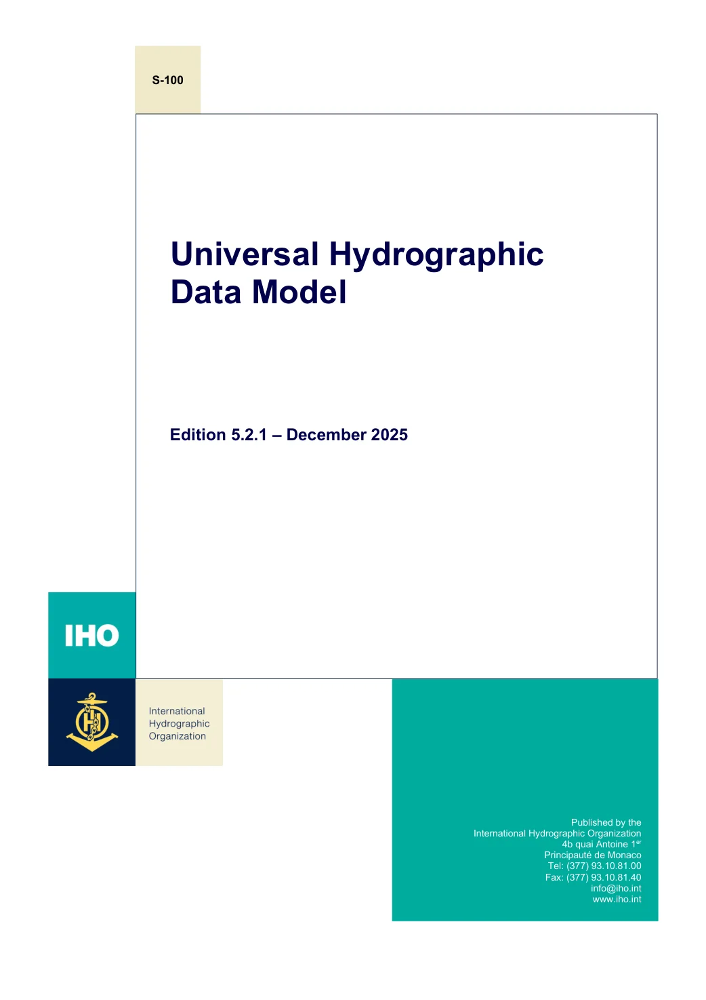

正在加载对应页译文…
英文来源：IHO 官方标准发布页 · S-100 5.2.1 完整官方 PDF · 2025 年 12 月版，核对日期 2026-11-04。
译文状态：全文文字采用本地开源模型生成中文参考译文，已统一部分术语；尚未逐条人工校订，非 IHO 官方中文版。专业术语、表格阅读顺序和强制用语需结合英文核对。
公式与数学符号保留官方原图，代码和部分字段名保持原文。原文 PDF 为正式依据。下载全部中文参考译文
连续阅读：向下滚动即可查看本文件全文，无需逐页点击；目录和搜索可直接定位。
官方英文原页
放大原页 ↗